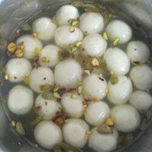

Rasgullas

Description
Rasgulla is a famous Indian sweet made from soft balls of chhena (fresh cottage cheese) that are cooked in light sugar syrup. The balls are kneaded until smooth, shaped, and then boiled in syrup, which gives them their signature spongy and juicy texture. They are typically white in color and mildly sweet with a delicate, melt-in-the-mouth feel.
Originating from eastern India, rasgullas are especially popular in states like West Bengal and Odisha. They are commonly served during festivals, celebrations, and special occasions. Served chilled or at room temperature, rasgullas are loved for their simplicity, softness, and refreshing sweetness.
Ingredients
- 6 cups milk
- 3 tablespoons fresh lime juice
- 2 ½ cups white sugar
- 6 cups water
- 1 teaspoon ground cardamom
Steps
- Bring the milk to a boil in a heavy-bottomed pan till it starts foaming; immediately add the lime juice and stir. It will curdle right away. You should see the milk solids (chenna) separate from the whey. Pour into a colander lined with cheesecloth; rinse the chenna with cold water to get rid of the lime juice. Allow the water to drain completely.
- Gather the muslin cloth edges like a parcel and express as much water as possible; what you now have is soft paneer. Turn the paneer onto a rolling mat or other smooth surface. Knead the paneer well to make a smooth paste. Roll into a ball and divide into 20 equal portions.
- Bring the water to a boil in a pressure cooker; stir the sugar into the boiling water until dissolved.
- Roll each portion of paneer into a smooth ball between your palms, making sure there are no cracks; gently drop the balls into the hot syrup. Secure the lid onto the pressure cooker and bring to pressure. Reduce heat to medium-low and pressure cook for 6 minutes.
- Release the pressure from the cooker while running under water; remove the lid. The rasgullas should be floating on the syrup and have expanded 2 or 3 times in size. Pour the rasgullas and syrup into a bowl. Gently stir the cardamom into the mixture. Refrigerate to chill completely before serving cold.
Home